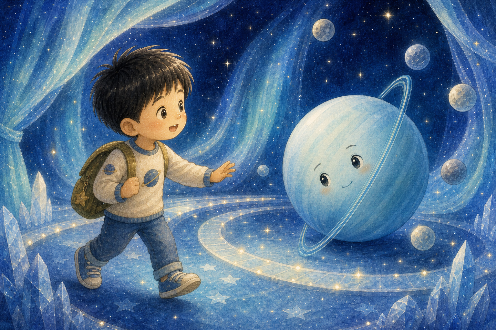
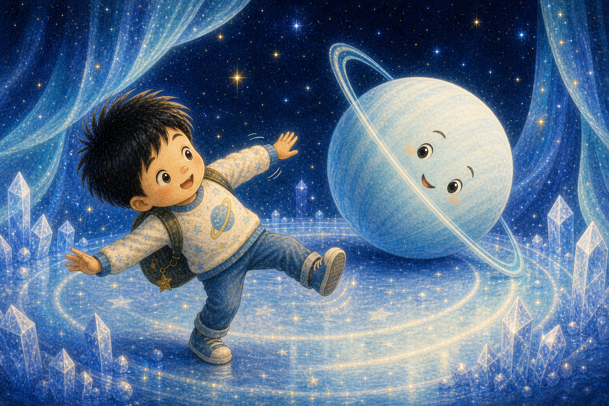
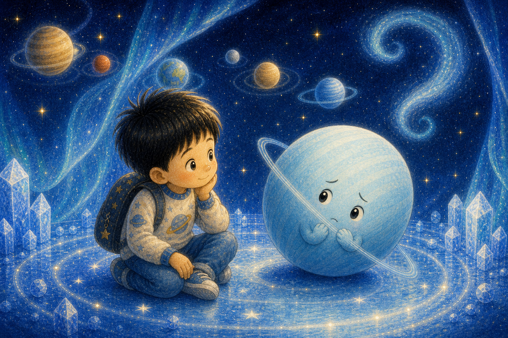
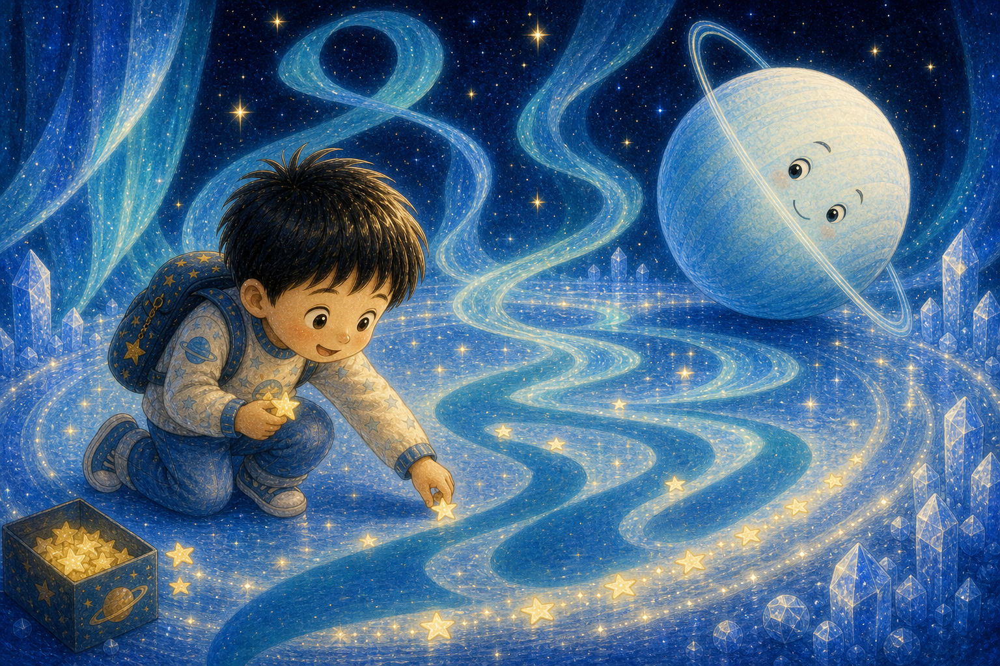
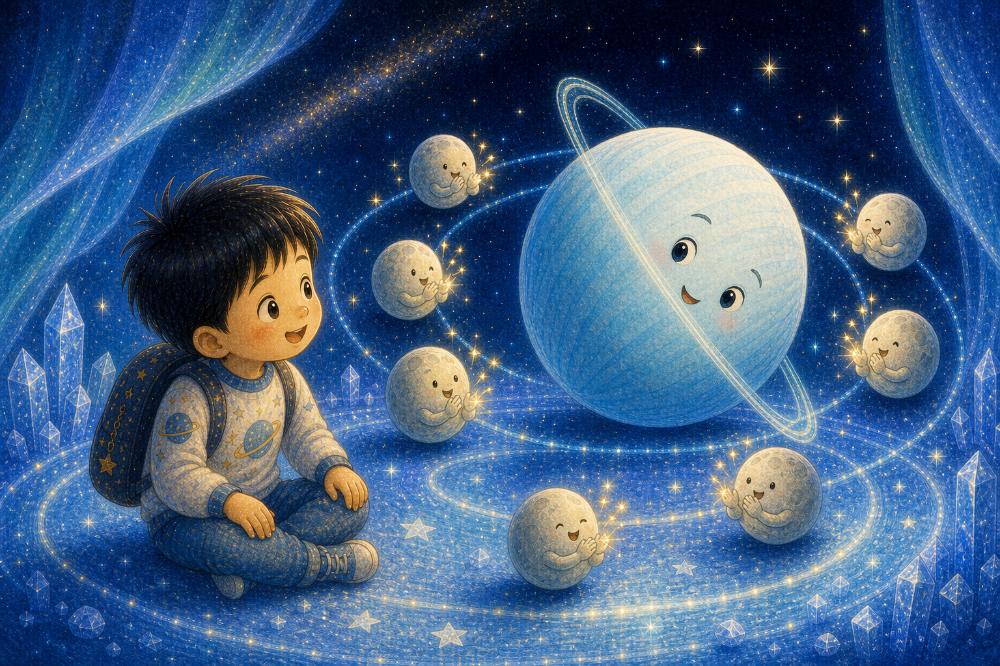
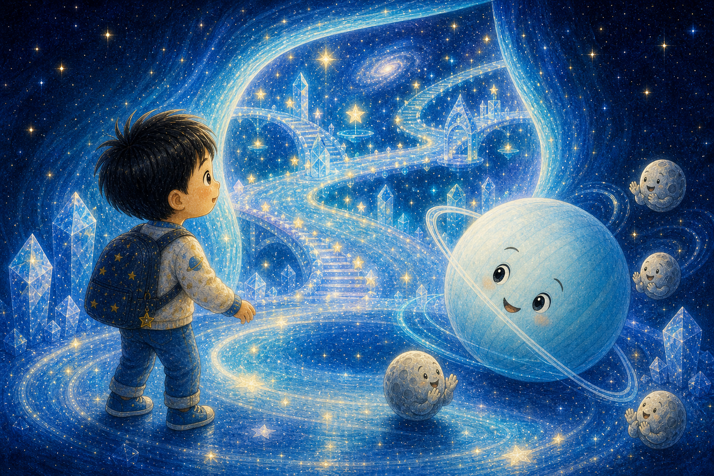
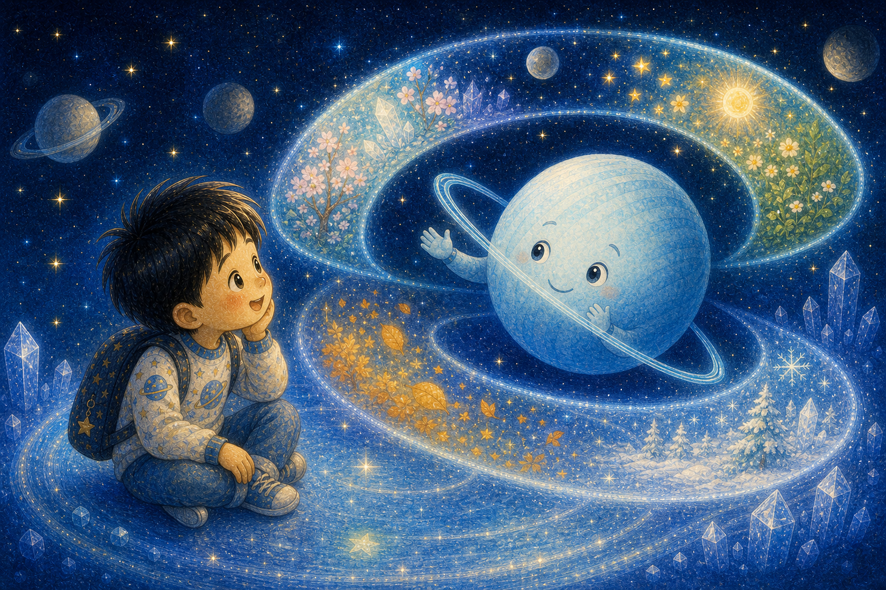
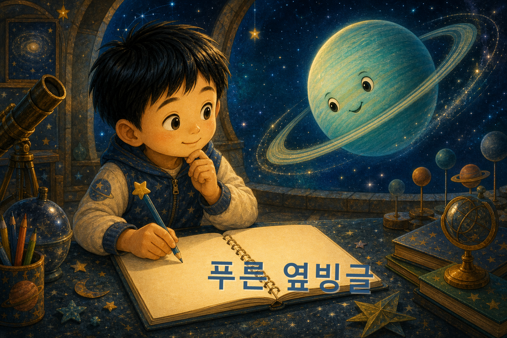
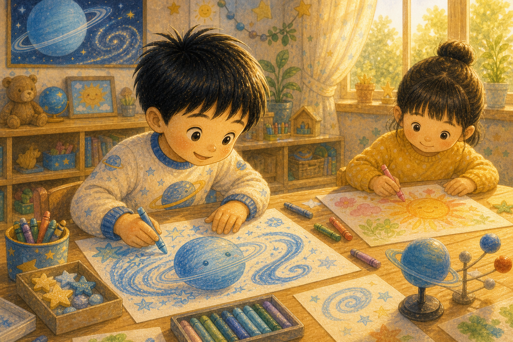

푸른 얼음빛 무대
하늘이는 연한 푸른빛 무대 위에서 천왕성을 만났어요. 천왕성은 다른 친구들과 달리 옆으로 누운 듯 돌고 있었지요.
"내 춤은 조금 이상해 보일까?"

하늘이는 연한 푸른빛 무대 위에서 천왕성을 만났어요. 천왕성은 다른 친구들과 달리 옆으로 누운 듯 돌고 있었지요.
"내 춤은 조금 이상해 보일까?"

천왕성은 몸을 기울여 인사했어요. 하늘이는 처음 보는 인사라 깜짝 놀랐지만 곧 따라 해 보았답니다.
새로운 인사는 웃음을 데려왔어요.

천왕성은 작은 목소리로 말했어요. "모두 똑바로 도는 것 같은데 나는 왜 옆으로 돌까?" 하늘이는 천천히 들었지요.
다른 모습에는 이유와 이야기가 있어요.

천왕성이 돌자 긴 푸른 리본 같은 그림자가 생겼어요. 하늘이는 그 그림자가 무대 장식처럼 아름답다고 말했답니다.
다르게 움직이니 다른 아름다움이 보였어요.

천왕성 곁의 작은 달들이 박수를 쳤어요. "우리는 네 옆돌기 춤이 좋아!" 천왕성의 얼굴이 환해졌지요.
가까운 친구의 응원은 큰 힘이 돼요.
하늘이도 일부러 비뚤빼뚤 춤을 추었어요. 완벽하지 않았지만 하늘이는 크게 웃었답니다.
즐거운 춤은 여러 가지가 다 정답이에요.

천왕성은 더 자신 있게 돌았어요. 그러자 푸른빛이 옆으로 펼쳐져 우주에 넓은 문처럼 열렸지요.
자기 방향을 믿으면 새 길이 열려요.

천왕성은 기울어진 몸 때문에 계절도 아주 특별하게 지나간다고 알려 주었어요. 하늘이는 긴 계절을 상상하며 눈을 반짝였답니다.
특별한 방향은 특별한 시간을 만들어요.

천왕성은 자기 춤에 "푸른 옆빙글"이라는 이름을 붙였어요. 하늘이는 그 이름을 우주 노트에 크게 적었지요.
이름을 붙이면 내 모습이 더 소중해져요.

아침에 깬 하늘이는 그림을 그릴 때 친구와 다른 색을 골라도 괜찮다고 생각했어요. 천왕성처럼 자기 방향을 믿기로 했답니다.
하늘이의 그림도 푸른 옆빙글처럼 특별했어요.